Part A uses a pretrained text-conditioned flow-matching model, so there is no training here; the work is in building the inputs, sampling, and conditioning. The model is trained on straight-line paths between Gaussian noise and a clean image. For a clean image \(x_1\), a noise sample \(\epsilon \sim \mathcal{N}(0, I)\), and a time \(t \in [0, 1]\), the noisy input is
\[ x_t = (1-t)\,\epsilon + t\,x_1 \]
so \(t = 0\) is pure noise and \(t = 1\) is the clean image. The velocity of this path (how the point moves per unit time) is constant:
\[ v = \frac{d x_t}{dt} = x_1 - \epsilon \]
The model \(v_\theta(x_t, t, c)\), given a text embedding \(c\), is trained to predict this velocity by minimizing \(\mathbb{E}\,\|v_\theta(x_t, t, c) - (x_1 - \epsilon)\|^2\). To generate an image, I start from noise at \(t = 0\) and integrate the learned velocity field with Euler steps of size \(h\):
\[ x_{t+h} = x_t + h\, v_\theta(x_t, t, c) \]
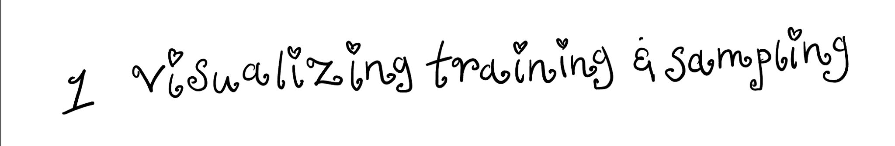
1.1 Constructing Noisy Training Inputs. My interpolate(image, noise, t) function implements the equation above:
\[ x_t = (1-t)\,\epsilon + t\,x_1 \]
I sampled one Gaussian noise tensor and reused it at \(t = 0.1, 0.5, 0.9\), so the three noisy images differ only in \(t\). This scales the image by \(t\) as well as mixing in noise, so the image gets fainter as \(t\) shrinks, not just noisier.
The ratio of signal to noise amplitude is \(t/(1-t)\), which is about 1/9 at \(t = 0.1\), 1 at \(t = 0.5\), and 9 at \(t = 0.9\). At \(t = 0.1\) the noise dominates and the image is barely able to be seen, at \(t = 0.5\) the image is more visible but noise is still obvious, and at \(t = 0.9\) there is significantly less noise.
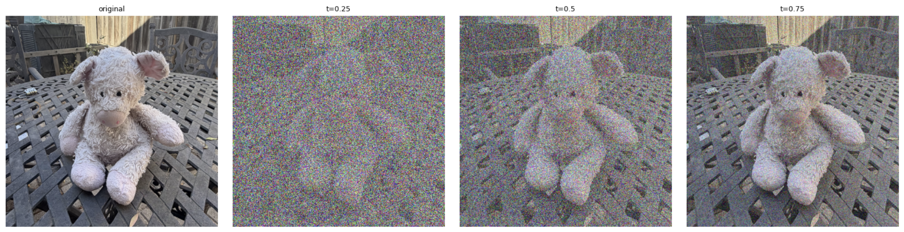
original + noisy inputs at t = 0.1, 0.5, 0.9
1.2 Classical Denoising. As a baseline, I denoised with a Gaussian blur. Dividing the noisy input by \(t\) first restores the image's original amplitude:
What remains is the clean image plus noise with standard deviation \((1-t)/t\), which is 9 at \(t = 0.1\), 1 at \(t = 0.5\), and about 0.11 at \(t = 0.9\). I then applied a Gaussian blur, \(\hat{x}_1 = G_\sigma * (x_t / t)\). Averaging neighboring pixels reduces the variance of independent noise by roughly \(1/(4\pi\sigma^2)\) for a wide kernel, but it also averages away detail, because edges and texture are high-frequency just like the noise. At small \(t\) the noise is so large that the \(\sigma\) needed to suppress it blurs the image heavily, which is why the high-noise times are the hardest.
I used a blur \(\sigma\) of [values] for \(t = 0.1, 0.5, 0.9\), because [reason: e.g. the largest blur that still kept the main shapes recognizable].
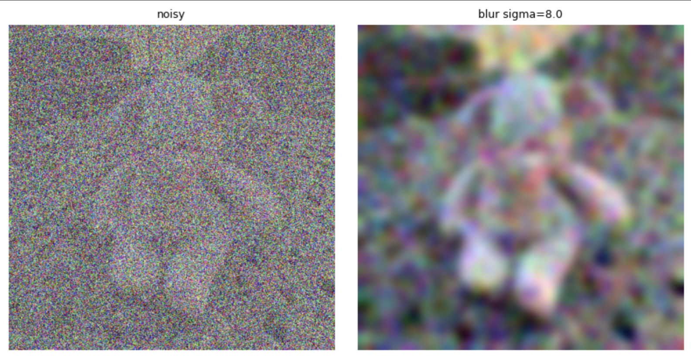
t = 0.1 — noisy vs Gaussian-denoised
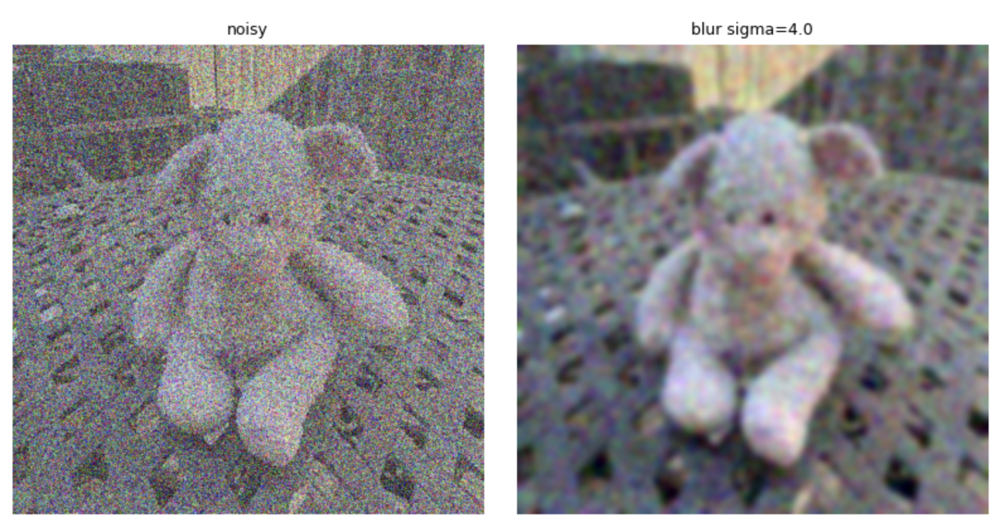
t = 0.5 — noisy vs Gaussian-denoised
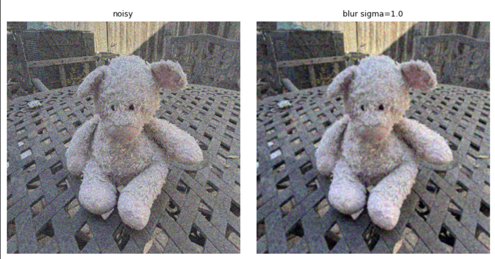
t = 0.9 — noisy vs Gaussian-denoised
1.3 One-Step Denoising. The one-step estimate extrapolates along the predicted velocity straight to the clean endpoint. Since \(x_t = (1-t)\,\epsilon + t\,x_1\) and \(v = x_1 - \epsilon\), the clean image satisfies \(x_1 = x_t + (1-t)\,v\), so I used
\[ \hat{x}_1 = x_t + (1-t)\, v_\theta(x_t, t, c) \]
with the prompt “a high quality photo”. The model outputs a velocity, not noise, so I couldn't subtract a predicted residual the way a noise-predicting denoiser does; the factor \((1-t)\) is the remaining distance to \(t = 1\). Because the model is trained with a squared error, its one-step estimate is a best guess averaged over everything consistent with the noisy input, so I expect it to look smooth when \(t\) is small and the input is very uncertain.
The denoising with a gaussian filter seems to still preserve the noise, just at a lower frequency. However, with the one step to a clean output it generates the details that were stripped away by the noise. Both don't perform very well though with high noise at low timesteps.
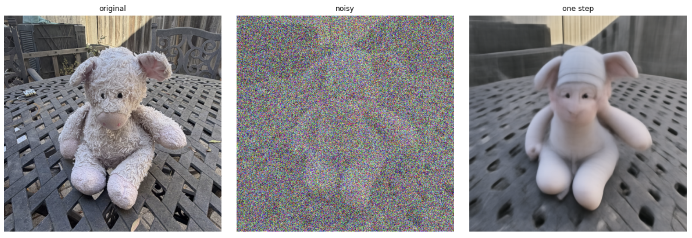
t = 0.1 — original, noisy, one-step estimate
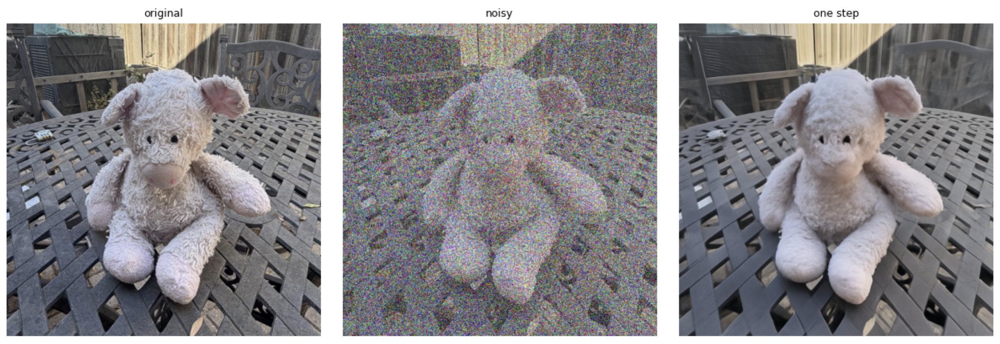
t = 0.5 — original, noisy, one-step estimate
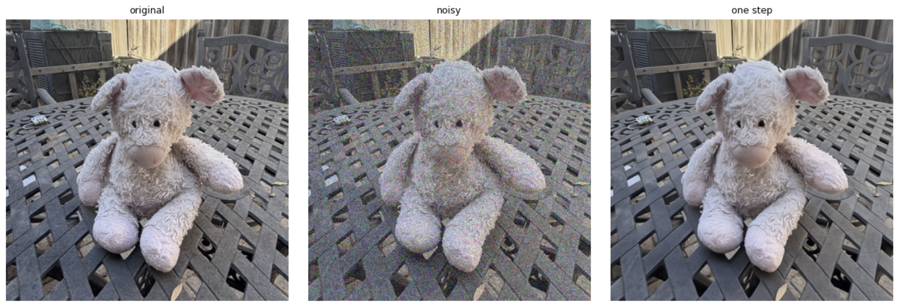
t = 0.9 — original, noisy, one-step estimate
1.4 Visualizing Velocity. To see where the model's velocity differs from the true one, I compared the update each would produce. The update toward the clean endpoint is \((1-t)\) times the velocity, so
I plotted \(\hat{u}\) and \(u\) on the same symmetric RGB scale around zero, so positive and negative updates are comparable, and used the same color range for the error maps at all three times so their magnitudes can be compared directly.
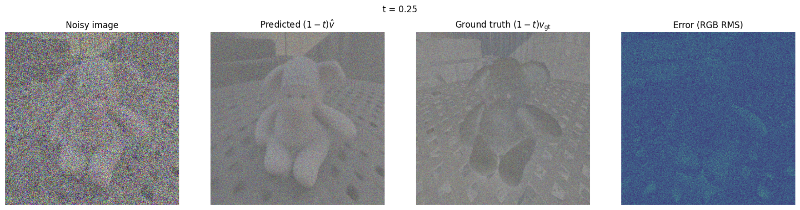
t = 0.1 — noisy, predicted update, ground-truth update, error
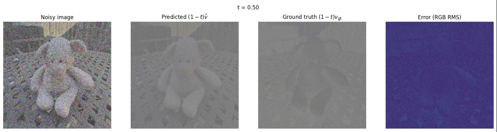
t = 0.5 — noisy, predicted update, ground-truth update, error
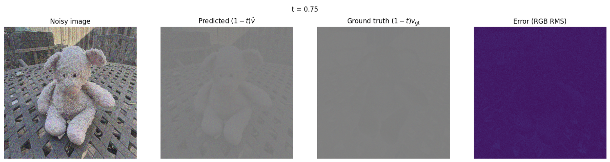
t = 0.9 — noisy, predicted update, ground-truth update, error
1.5 Iterative Denoising with Euler Sampling. A single step assumes the velocity stays the same all the way to \(t = 1\), but the velocity changes as the image becomes cleaner. My euler_sample instead takes many small steps and re-evaluates the velocity at the new state after every one:
\[ x_{t+h} = x_t + h\, v_\theta(x_t, t, c) \]
I started from the saved \(t = 0.5\) noisy image with a step size \(h = 0.02\). The remaining distance is \(1 - 0.5 = 0.5\), so this takes \(0.5 / 0.02 = 25\) updates. The step is written as \(h_k = \min(0.02,\, 1 - t_k)\), so the last step is shortened if needed to land exactly on \(t = 1\) instead of overshooting. The figure shows the intermediate states at \(t = 0.5, 0.6, 0.7, 0.8, 0.9\).
[Compare the final Euler result to the original, the one-step estimate, and the Gaussian blur on the same noisy input.]
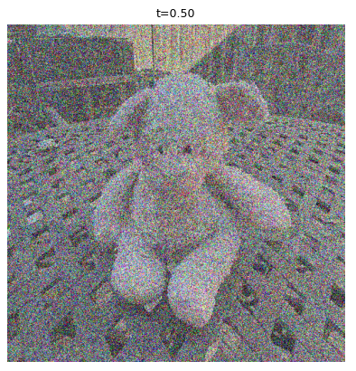
t = 0.5 (start)
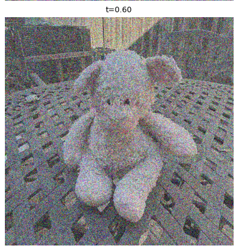
t = 0.6
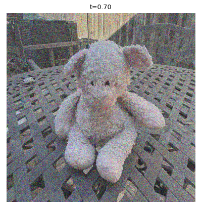
t = 0.7
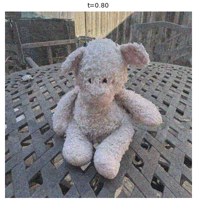
t = 0.8
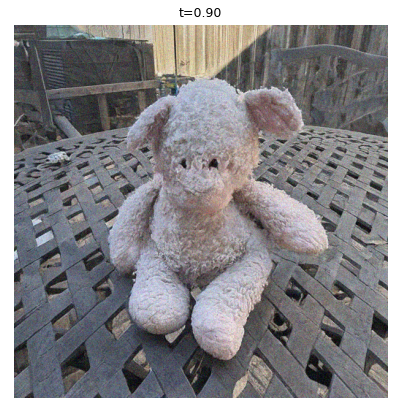
t = 0.9
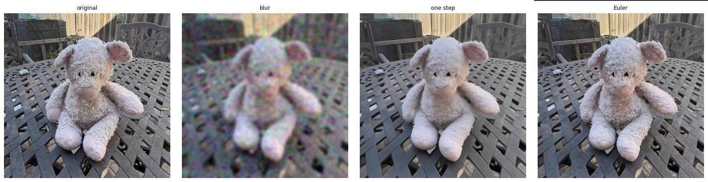
final Euler vs original, one-step, and Gaussian blur
1.6 Generating Images from Noise. To generate an image from scratch, I used the same sampler with \(t_{\text{start}} = 0\) and a random starting point \(x_0 \sim \mathcal{N}(0, I)\), and integrated all the way to \(t = 1\) with \(h = 0.02\), which is 50 Euler steps. The condition was the prompt “a high quality photo”, and I generated five samples from five different noise draws.
The images all seem to produce humans in portrait style images. Though the details are not very refined, it is interesting to see how each seed arrives at different images based on the noies generated.
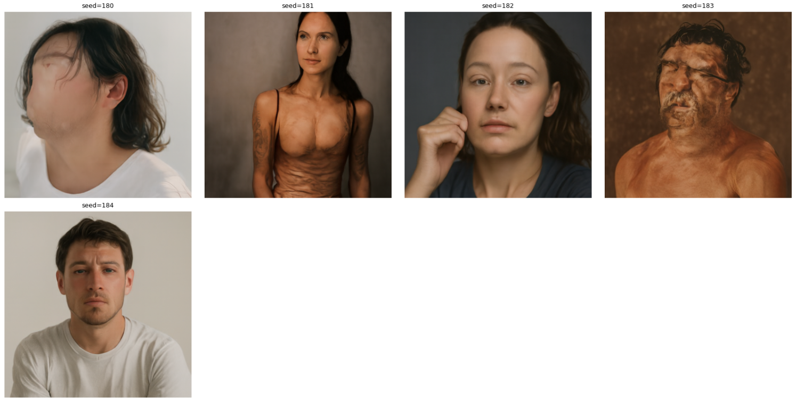
five samples from pure noise — “a high quality photo”
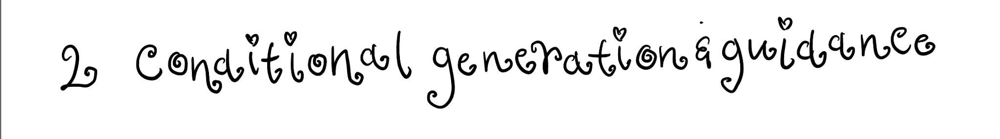
This section improves how closely the samples follow the prompt using classifier-free guidance.
2.1 Classifier-Free Guidance (CFG). Classifier-free guidance combines two velocity predictions at the same image and time: one with the prompt, \(v_c = v_\theta(x_t, t, c)\), and one with an empty prompt, \(v_u = v_\theta(x_t, t, \varnothing)\):
\[ v_{\text{cfg}} = v_u + \gamma\,(v_c - v_u) \]
I used \(\gamma = 5\). The difference \(v_c - v_u\) points in the direction that makes the image more consistent with the prompt, and \(\gamma > 1\) pushes further along it than the conditional prediction alone (\(\gamma = 1\) is plain conditional sampling and \(\gamma = 0\) is unconditional). Each Euler step now needs two model evaluations. I used the same five initial noise samples as in 1.6 and a step size of 0.02, so the two figures can be compared directly.
When comopared to the unguided samples, these photos look much more realistic and polished. They also retain some similar features, like the hand near the face for both in seed 182. While the other images had more detail and a more unpolished aspect, the CFG images look more smooth and perfect.
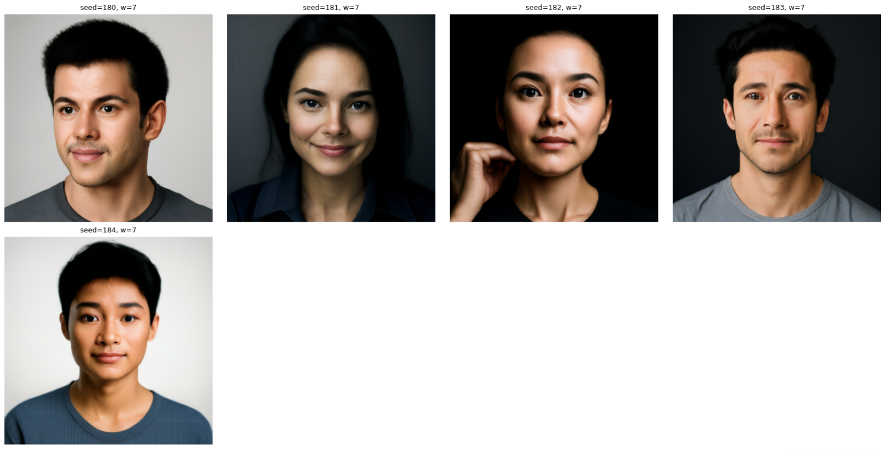
five CFG samples (γ = 5) — same noises as 1.6
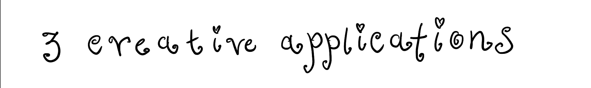
3.1 Image-to-Image Editing. Image-to-image editing follows SDEdit. Instead of starting from pure noise, I noise the input image \(x_1\) to a starting time \(t_s\) and then run the CFG sampler from there to \(t = 1\):
I used \(\gamma = 5\), \(h = 0.02\), and the prompt “a high quality photo”. The starting time controls how much of the input survives. A small \(t_s\) means more noise was added, so the model has more freedom and the edit is larger, while a large \(t_s\) keeps most of the original image. I used the starting times \(t_s \in \{0.02, 0.04, 0.06, 0.10, 0.14, 0.25, 0.50\}\) for the Campanile and my own images, with the same noise sample at every time so that only \(t_s\) changes.
At very low time steps, the campanile was interpreted as a long white object. In my other images, I also notice how at the lower timesteps large features like negative space or edges were somewhat preserved, until at later steps the final image is nearly identical to the starting image.
I also ran the same procedure on an image from the web and on two hand-drawn images. Adding noise destroys the low-level cues that mark an input as a drawing, and the sampler, which only produces natural-looking images, fills in photographic detail on the way back. The result is a projection of the input toward the manifold of natural images.
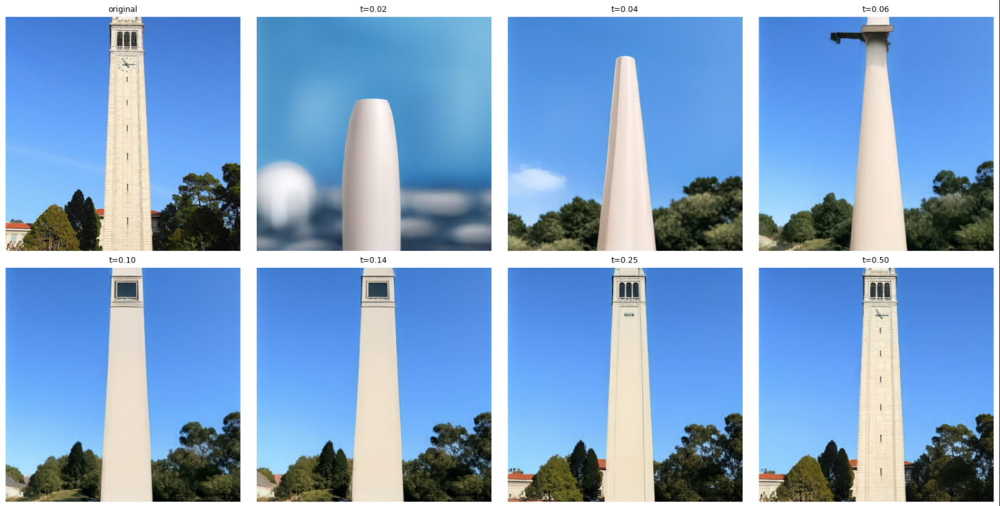
Campanile edits — “a high quality photo”
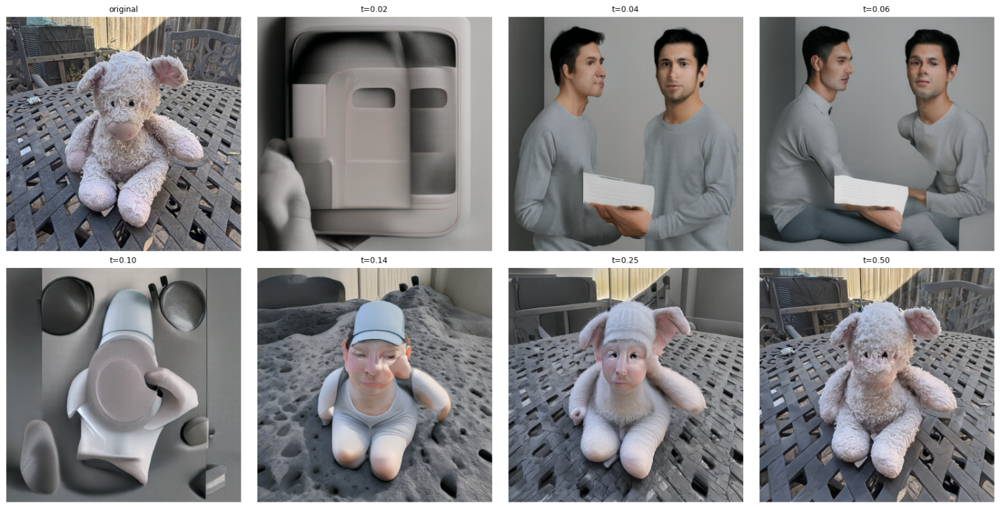
stuffed animal — edits by starting time
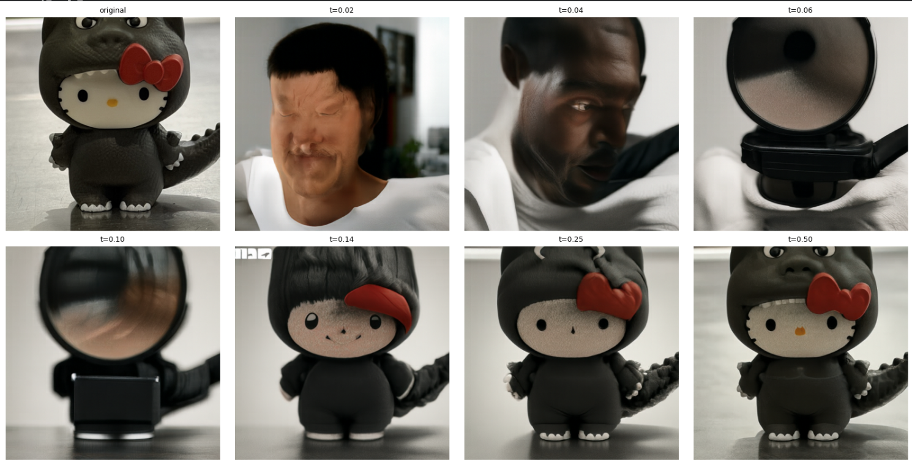
godzilla kitty — edits by starting time
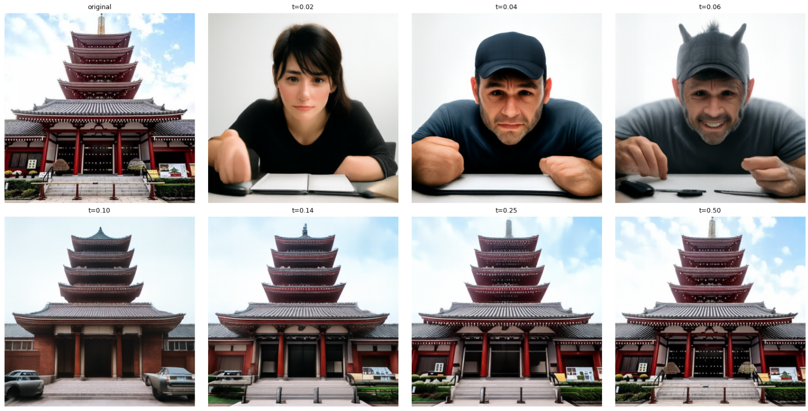
pagoda — edits by starting time
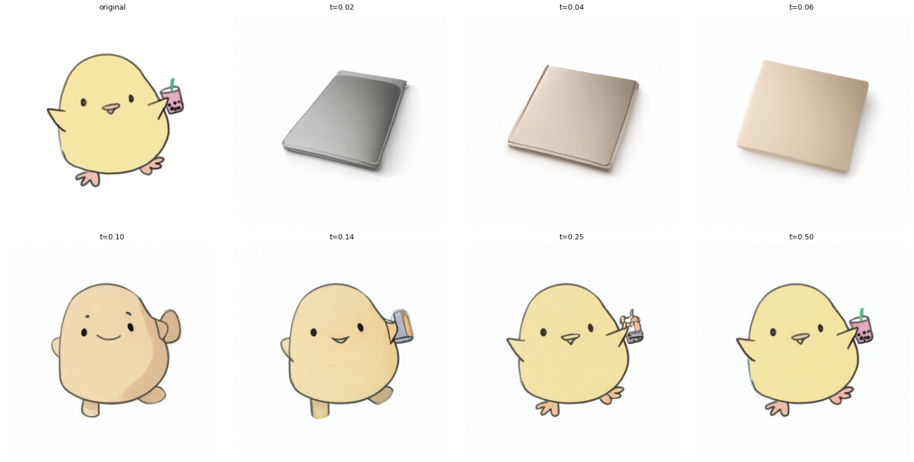
hand-drawn duck — edits by starting time
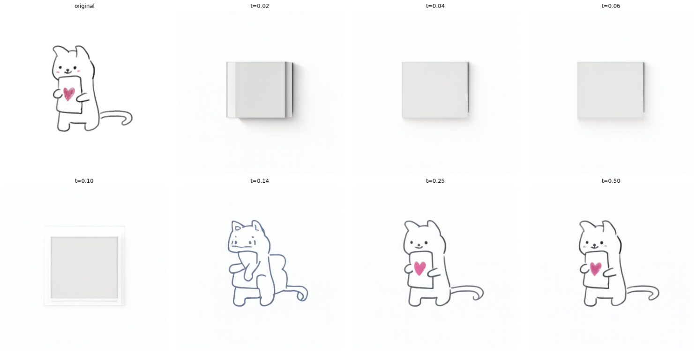
hand-drawn cat — edits by starting time
3.2 Text-Guided Image Editing. This uses the same procedure as 3.1, with the same starting times, but the prompt \(c\) describes the edit I want instead of “a high quality photo”. Because the image is noised first, the starting time sets the balance between following the prompt and keeping the original. A smaller \(t_s\) gives the model more room to follow the text, while a larger \(t_s\) keeps the layout of the input.
[Campanile prompt: “…”. Own image 1 prompt: “…”. Own image 2 prompt: “…”. Observations.]
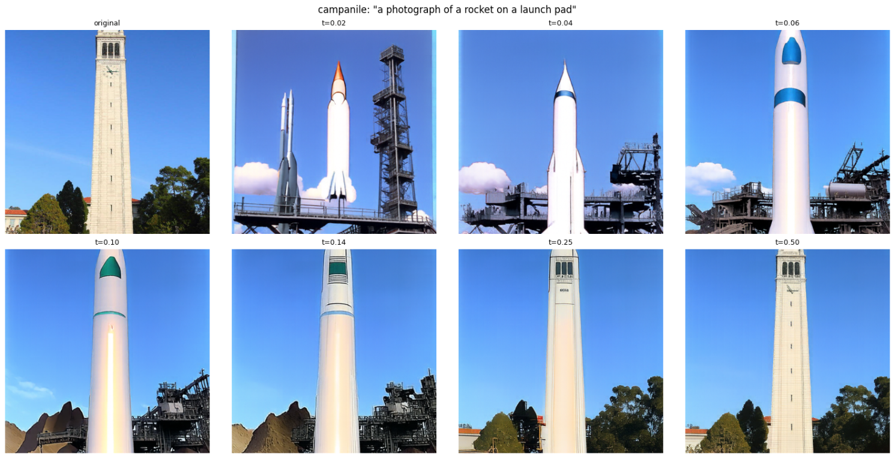
Campanile — a photograph of a rocket on a launch pad
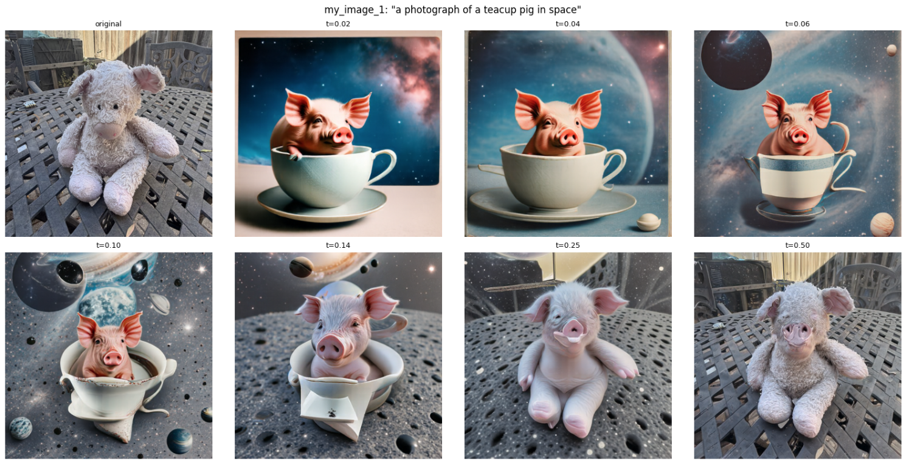
stuffed animal - a photograph of a teacup pig in space
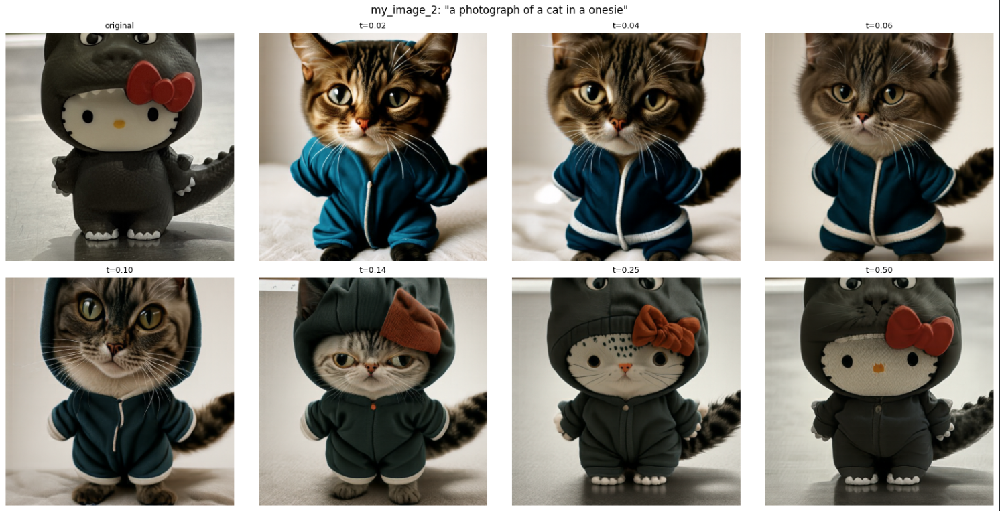
godzilla kitty - a photograph of a cat in a onesie
3.3 Visual Anagrams. A visual anagram is an image that shows one subject right side up and a different subject when rotated 180°. Let \(F\) be the rotation by 180° (it flips both spatial axes, so \(F(F(x)) = x\) and \(F^{-1} = F\)). At each Euler step I denoise the image normally with prompt A, denoise the rotated image with prompt B, rotate that second velocity back, and average the two:
The upright image is pulled toward prompt A while the rotated image is pulled toward prompt B, so the sampler settles on an image that is a plausible match for both. Both velocities are recomputed from the current \(x_t\) and \(t\) at every step.
Prompt pairs worked best when they shared silhouettes, and when style was kept consistent. For some images, I definitely noticed a difference in quality depending on the seed.
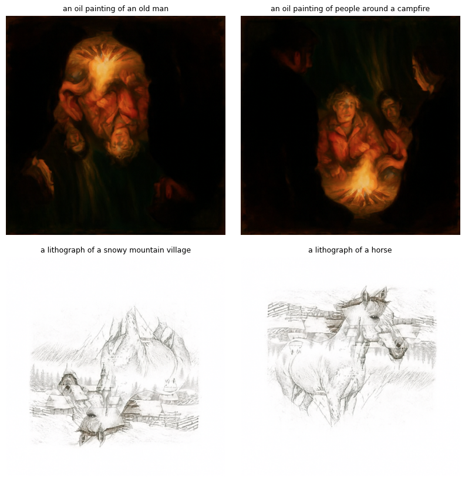
illusion 1 — upright vs flipped
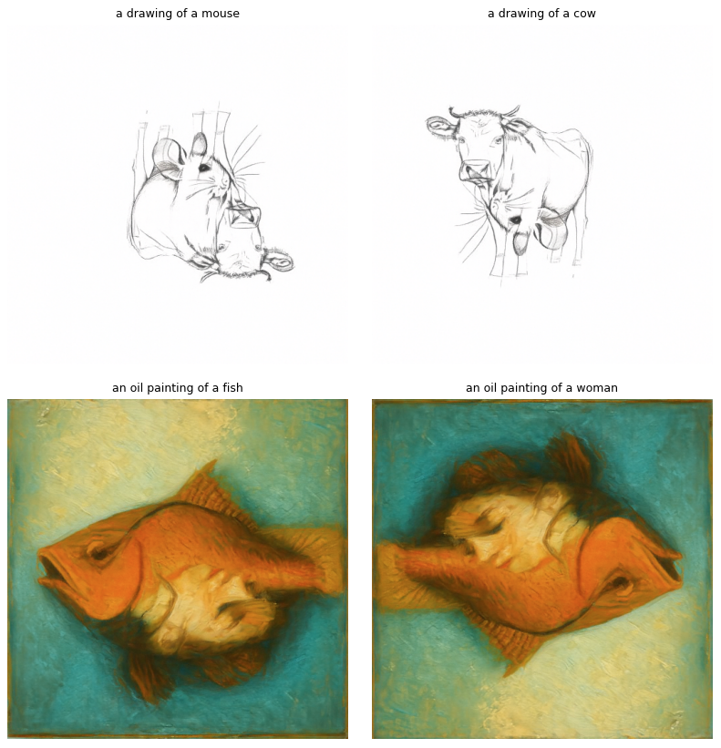
illusion 2 — upright vs flipped
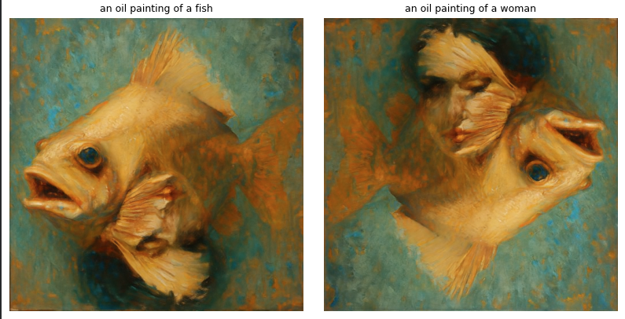
same prompt as before, but seed was modified to seed + 1
3.4 Hybrid Images. This applies the hybrid-image idea from Project 2 to the velocity at every Euler step. Let \(\mathcal{L}\) be a Gaussian low-pass filter. The combined velocity keeps the low frequencies of the prediction for prompt A and the high frequencies of the prediction for prompt B:
The high-pass part is the prediction minus its low-pass version. Prompt A therefore sets the coarse structure that is visible from far away, and prompt B sets the fine detail that is visible up close. Both predictions use the same image and time at each step. The “far” figures are shrunk to 64×64 to show the low-frequency subject.
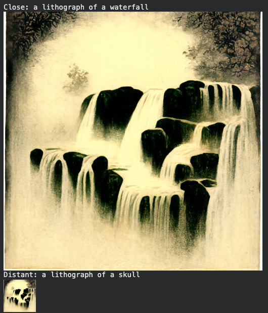
hybrid 1
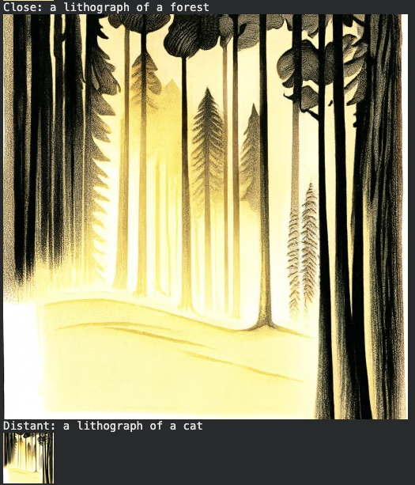
hybrid 2
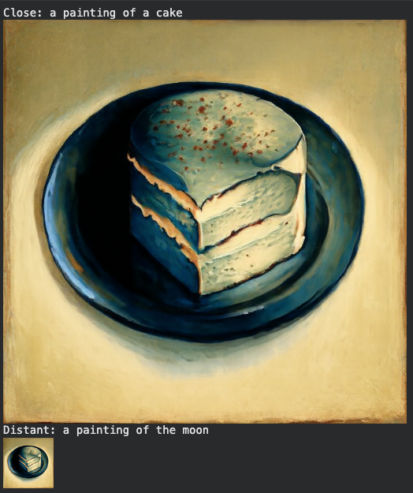
hybrid 1 — seed - 5
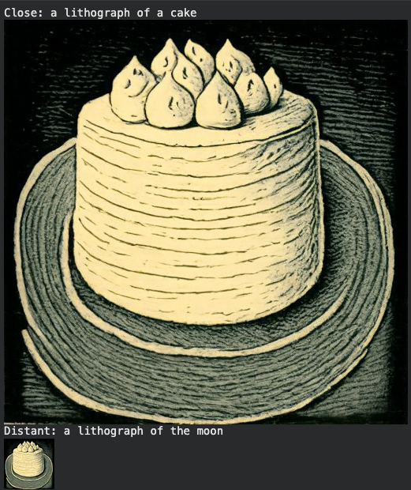
hybrid 1 — seed + 1
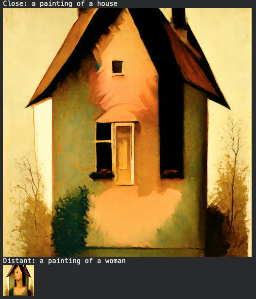
hybrid 2 — seed - 5
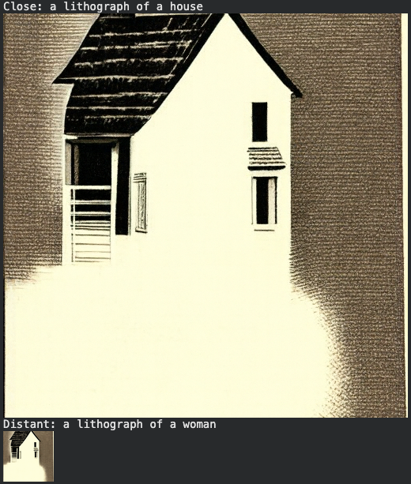
hybrid 2 — seed + 1 with different prompt
Part B. In Part B I train my own models on MNIST. First I train a UNet to denoise in a single step and look at where that approach breaks down. Then I train a UNet to predict the flow in flow matching, which lets me generate digits by iterating, and finally I add class conditioning.
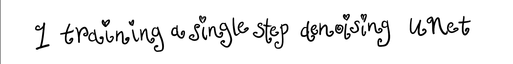
1.1 Implementing the UNet. I built the UNet from a few basic operations. The convolutional ones are each followed by batch norm and a GELU. Conv is a 3×3 convolution (stride 1, padding 1) that changes only the channel count. DownConv is a 3×3 convolution with stride 2 that halves the resolution. UpConv is a 4×4 transposed convolution with stride 2 that doubles it. Flatten is average pooling over the whole 7×7 map, which turns it into 1×1, and Unflatten is a 7×7 transposed convolution that expands it back. The output sizes follow
which gives \(28 \to 14 \to 7\) going down and \(7 \to 14 \to 28\) coming back up. Going down, the channel count goes \(1 \to D \to D \to 2D\). On the way back up, each decoder stage first concatenates the matching encoder feature map along the channel axis, so the decoder blocks take \(4D\), \(2D\), and \(2D\) input channels. These skip connections let the decoder recover the fine spatial detail that downsampling throws away. A final 3×3 convolution maps \(D\) channels back to the image's channel count.
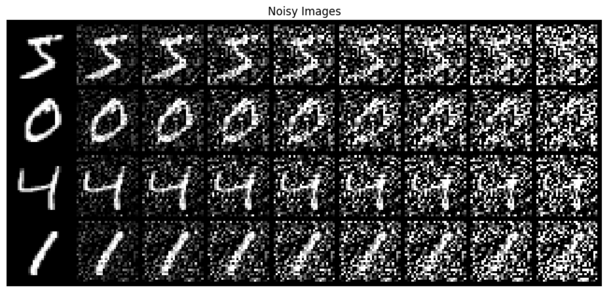
UNet Diagram of Forward Noising
1.2 Using the UNet to Train a Denoiser. To train a denoiser I need pairs of noisy and clean images. For each clean MNIST digit \(x\), normalized to \([0, 1]\), I generate the noisy version
\[ z = x + \sigma\,\epsilon, \qquad \epsilon \sim \mathcal{N}(0, I) \]
The figure shows this for \(\sigma \in \{0.0, 0.2, 0.3, 0.4, 0.5, 0.6, 0.7, 0.8, 1.0\}\), using the same \(\epsilon\) at every \(\sigma\), so only the strength of the noise changes from column to column.
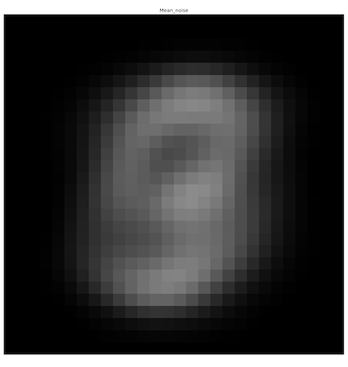
noising process as σ increases
1.2.1 Training. I trained the denoiser \(D_\theta\) to map a noisy image back to the clean one by minimizing the squared error
\[ L = \mathbb{E}_{x,\,\epsilon}\,\big\|\, D_\theta(x + \sigma\epsilon) - x \,\big\|^2 \]
at \(\sigma = 0.5\). I used hidden dimension \(D = 128\), Adam with learning rate \(10^{-4}\), batch size 256, and 5 epochs over the training set. The noise is added to each batch after it is loaded from the dataloader, so every epoch sees new noise on the same digits. For the sample figure I fixed ten test-set digits and one noise draw before training and ran them through the model after epochs 1 and 5, so the two results are directly comparable.
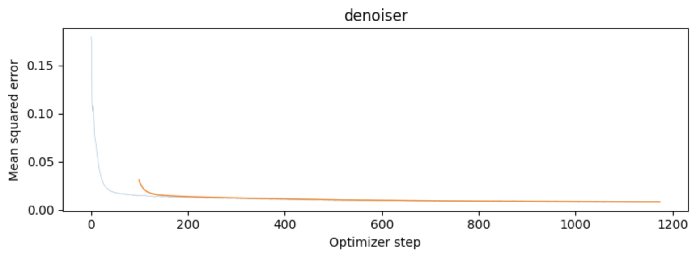
training loss (σ = 0.5)
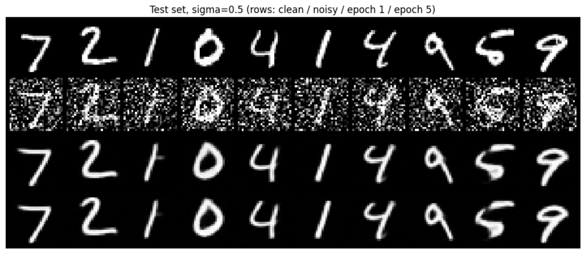
test samples after epoch 1 and epoch 5
1.2.2 Out-of-Distribution Testing. The denoiser only ever saw \(\sigma = 0.5\) during training. To see how it behaves on noise levels it wasn't trained for, I ran the same test digits through the trained model at \(\sigma \in \{0.0, 0.2, 0.3, 0.4, 0.5, 0.6, 0.7, 0.8, 1.0\}\), reusing the same \(\epsilon\) each time so that only \(\sigma\) changes.
As sigma increased, the network was able to remove noise but struggled to keep the digits identifiable. At the highest levels of noise, there are also smudges that the network mistakenly kept.
1.2.3 Denoising Pure Noise. To make denoising generative, I retrained a new model with the same settings as 1.2.1, but with the input replaced by pure noise \(z \sim \mathcal{N}(0, I)\) that has nothing to do with the target digit \(x\). The loss is still a squared error:
\[ L = \mathbb{E}\,\big\| D_\theta(z) - x \big\|^2 \]
For a squared-error loss, the best possible prediction given an input is the conditional mean, \(D^*(z) = \mathbb{E}[x \mid z]\). Since \(z\) is independent of \(x\), this does not depend on \(z\) at all:
which is the pixelwise average of all the training digits. The network therefore learns to mostly ignore its input and output the same blurry average image every time. The generated outputs look like one smudged digit-shaped blob, and they do not resemble any specific digit from 0 to 9, because predicting any one digit would be wrong on most of the training set and cost more loss than the average. The small differences between outputs come from the network not ignoring the noise perfectly.
training loss — pure noisesamples after epoch 1samples after epoch 5
2.1–2.2 Time-Conditioned Flow Matching UNet. One-step denoising can't generate varied digits, so I switched to flow matching, where the UNet predicts the velocity along a path from noise to a clean digit and generation iterates. For a clean digit \(x_1\), noise \(x_0 \sim \mathcal{N}(0, I)\), and a time \(t\) drawn uniformly from \([0, 1]\) for each image,
The target is the flow, not the clean digit, so it contains both the digit and the noise to remove. To give the UNet the time, I pass the scalar \(t\) (already in \([0, 1]\)) through two small fully connected blocks (FCBlock, built from nn.Linear layers) to get \(t_1\) and \(t_2\), and use them to modulate the features: the unflatten output is replaced by \(t_1 \odot \text{unflatten}\), and the first up-block output by \(t_2 \odot \text{up1}\), where \(\odot\) scales each channel. I used \(D = 64\), batch size 64, Adam with an initial learning rate of \(10^{-2}\), and an exponential decay with \(\gamma = 0.1^{1/10} \approx 0.794\), stepped once per epoch, so the learning rate falls to one tenth of its initial value over the 10 epochs.
Time Conditioned UNet Loss
2.3 Sampling from the Time-Conditioned UNet. To sample, I start from \(x \sim \mathcal{N}(0, I)\) at \(t = 0\) and take \(T = 50\) Euler steps along the learned flow:
I generated a grid of samples after epochs 1, 5, and 10, using the same starting noise each time, so the differences between the grids come from training alone.
Over the epochs, the images got more identifiable as digits, retaining the parts of the digit that would contribute to a class and removing parts that added confusion.
epoch 1epoch 5epoch 10
2.4–2.5 Class-Conditioned UNet. To control which digit is generated, I also condition the UNet on the class. The class is a one-hot vector \(c \in \{0, 1\}^{10}\), and with probability \(p_{\text{uncond}} = 0.1\) I set it to all zeros during training, so that the same network also learns an unconditional model for guidance. Two more FCBlocks embed \(c\) as \(c_1\) and \(c_2\), and the modulation now scales with the class and shifts with the time:
The training objective is the same flow-matching loss, with the (possibly dropped) class as an extra input:
\[ L = \mathbb{E}\,\big\| u_\theta(x_t, t, m\,c) - (x_1 - x_0) \big\|^2, \qquad m \sim \text{Bernoulli}(0.9) \]
I used the same hyperparameters as 2.1–2.2 (\(D = 64\), batch size 64, Adam with learning rate \(10^{-2}\) and the same exponential decay) and saved checkpoints after epochs 1, 5, and 10.
loss without scheduler, constant learning rateclass-conditioned UNet — training loss
2.6 Sampling with Class Conditioning. To sample with class conditioning, I use classifier-free guidance at every Euler step, mixing the class-conditioned and unconditional (\(c = 0\)) predictions with \(\gamma = 5\):
\[ u = u_\theta(x_t, t, 0) + \gamma\,\big( u_\theta(x_t, t, c) - u_\theta(x_t, t, 0) \big), \qquad x_{t+1/T} = x_t + \tfrac{1}{T}\, u \]
with \(T = 50\). Each figure shows four instances of every digit (40 images; each column is one digit 0–9) from the same starting noise, after epochs 1, 5, and 10.
For the run without the exponential scheduler, I removed the scheduler and used a constant learning rate of [lr, e.g. \(3 \times 10^{-3}\)]. The scheduled run starts at \(10^{-2}\) and decays to \(10^{-3}\), so a constant \(10^{-2}\) would stay noisy late in training, while a constant \(10^{-3}\) would learn slowly at the start; I picked a value between the two to keep similar performance. The loss curves for the loss without scheduler was significantly more noisy to the end compared to the scheduled increases in learning rate.
For the actual samples, at epoch 1 the constant learning rate seemed to perform much better than the schedule learning rate. However, toward the end the scheduled learning rate seemed to produce images that were slightly more consistent looking compared to the constant learning rate. This is interesting as it lines up with how their loss curves appear, where the scheduled run seemed to produce images that had less error but also more uniformity.